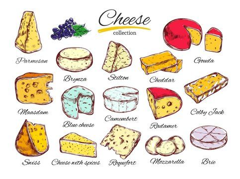

You can check here for more information about the milk and milk products.
This is a recipe for making an Appenzeller style cheese. Since we don't live in the Appenzell region, we won't be making their specific cheese, but we can take the basic concepts and create our own version of this wonderful cheese. Appenzeller is a fantastic cheese that has been made for over 700 years in the mountains of Switzerland. While aging, a unique treatment is applied, the rind is rubbed with a "secret" blend of yeast, alcohol, and a combination of 25 different herbs, roots, leaves, petals, seeds, and bark.
To begin, heat the 4 liters of milk to 32°C (90°F) in a large pot, stirring occasionally to prevent scorching. If you're using pasteurized milk, add calcium chloride to help the curds form. Sprinkle the mesophilic starter culture (and propionic shermanii, if using) over the surface of the milk, allowing it to rehydrate for 2-3 minutes before stirring gently into the milk. Allow the milk to ripen for 30 minutes at 32°C (90°F). After ripening, dissolve the rennet in a small amount of cool, chlorine-free water, stir it gently into the milk, and let it sit undisturbed for 60-90 minutes until the milk forms a clean break (firm, gel-like consistency). Once the curd is set, cut it into 1/2 inch (1.5 cm) cubes, and let it rest for 5-10 minutes. Then, slowly raise the temperature of the curds to 38-40°C (100-104°F) over 30 minutes while stirring gently to help expel whey and firm up the curds. Stir for an additional 30-60 minutes to continue expelling whey and firming the curds. Afterward, carefully drain the whey from the curds using a colander lined with cheesecloth or by pouring it off. Transfer the curds into a cheese mold, then press with moderate weight (10-15 lbs) for 30 minutes. After 30 minutes, increase the weight to 25-30 lbs and press for 12-24 hours, flipping the cheese every 4-6 hours to ensure even pressing. Once the pressing is complete, remove the cheese from the mold and soak it in a brine solution (1 cup water + 1 tsp salt) for 12-24 hours. After brining, place the cheese on a cheese mat in a cool, humid environment (ideally around 10-12°C or 50-54°F). Turn the cheese every 2-3 days during the first few weeks and rub it with the herbal brine mixture (wine, herbs, and salt) weekly to develop the flavor and prevent mold. The cheese should be aged for 3-6 months for a milder flavor or up to 12 months for a sharper, more complex taste. Once it reaches the desired aging, slice and serve it. Appenzeller cheese is perfect for melting, grating, or enjoying on its own.
